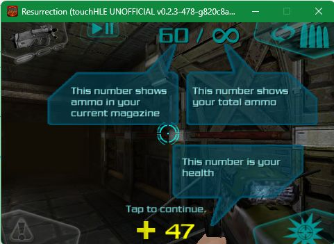
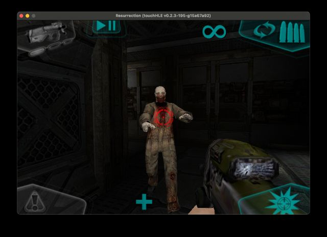

| App name | Doom Resurrection |
|---|---|
| Release year | 2009 |
| Developer/Publisher | ID Software, Escalation Studios |
| First reported | |
| First reported by | @WarmestKrafter |
| Version number | Display name | Bundle identifier | Minimum iOS version | Best rating | Last updated | First reported by | |
|---|---|---|---|---|---|---|---|
| 1.0.1 | Resurrection | com.escalationstudios.ResurrectionDoom | 2.2.1 | ⭐️⭐️⭐️ | @WarmestKrafter | ||
| 1.1 | Resurrection | com.escalationstudios.ResurrectionDoom | 2.2.1 | ⭐️⭐️⭐️⭐️⭐️ | @notprogramminggames |
| Version number | touchHLE version | Operating system | GPU | Scale hack supported? | Rating | Reported | Reported by | Remarks | Screenshot |
|---|---|---|---|---|---|---|---|---|---|
| 1.1 | v0.2.3-478-g820c8a5f | Windows 11 | RTX 4060 | Didn't test | ⭐️⭐️⭐️⭐️⭐️ | @dyharlan | Responds to touch inputs, renders game just fine. | View | |
| 1.0.1 | v0.2.3-218-gece12407 | Android | Snapdragon 8 Gen 2 | Couldn't test | ⭐️⭐️⭐️ | @GabrielDenzy | The game responds to screen touches and plays sound, but does not display image, black screen. | ||
| 1.0.1 | v0.2.3-195-g15a67a92 | macOS 15.7.4 | Apple M1 GPU | Yes | ⭐️⭐️⭐️ | @ciciplusplus | Playable. Health and ammo numbers do not render. Some cutscence rendered as black screen. Crashes on exit, but this doesn't affect checkpoints. | View | |
| 1.1 | v0.2.2 | Windows 11 22H2 | AMD Radeon Vega Mobile | Didn't test | ⭐️ | @notprogramminggames | Crashes after Doom logo displays | ||
| 1.0.1 | v0.2.1 | Android | MediaTek Helio G99 | No (broken) | ⭐️ | @WarmestKrafter |
| Rating | Description |
|---|---|
| ⭐️ | Completely broken: app crashes immediately without any user interaction. |
| ⭐️⭐️ | Only (part of) the main menu, intro or similar is working. |
| ⭐️⭐️⭐️ | Some of the main content of the app works, but with major issues. |
| ⭐️⭐️⭐️⭐️ | The main content of the app works (e.g. entire game is playable) with only small issues. |
| ⭐️⭐️⭐️⭐️⭐️ | Everything works. The app is fully usable. |

